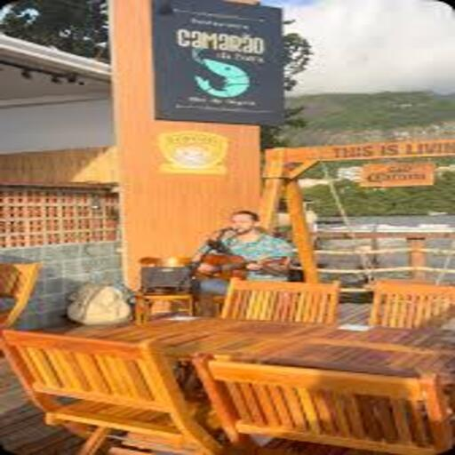
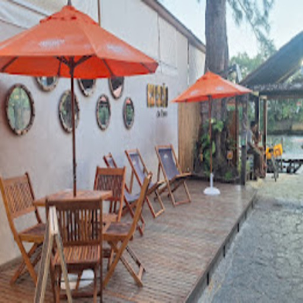
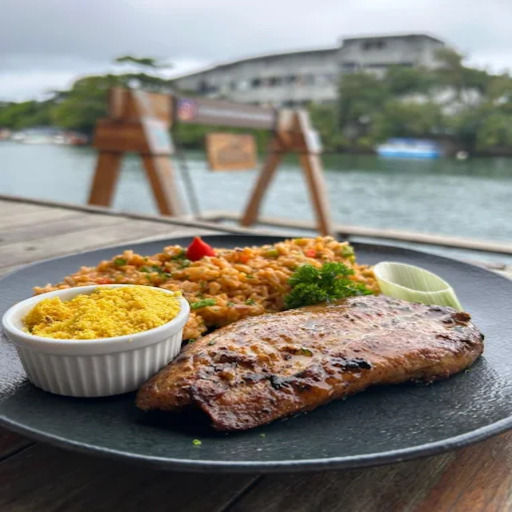
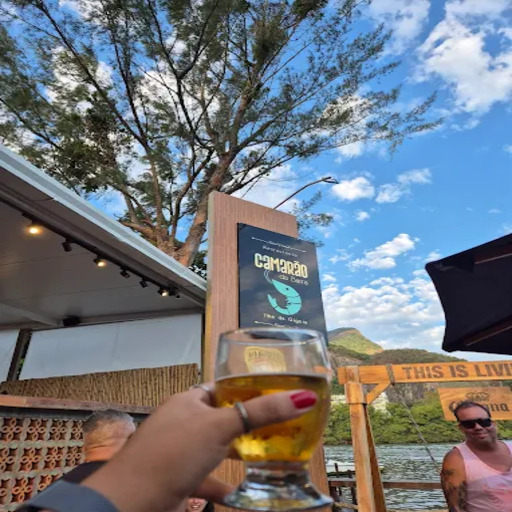
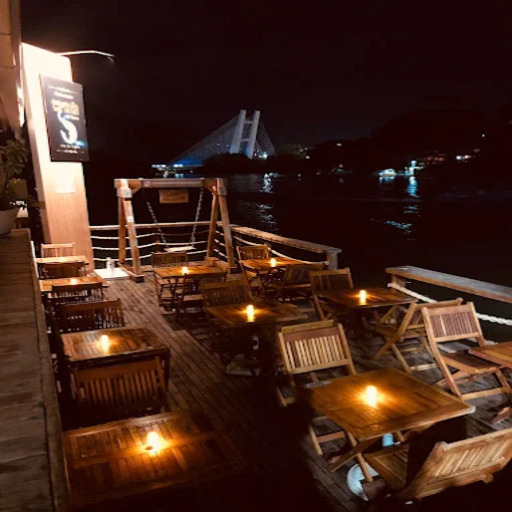
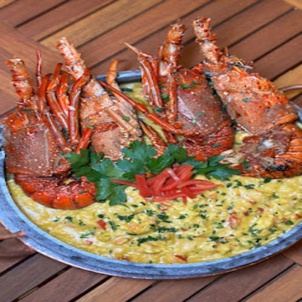
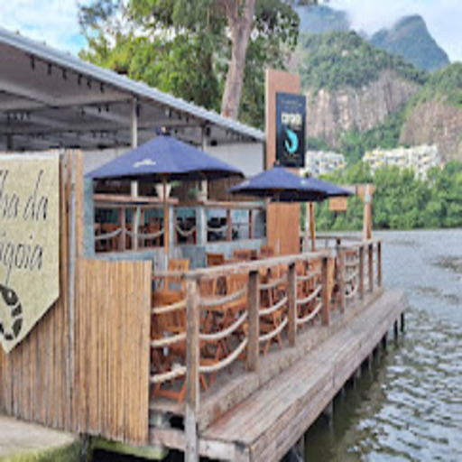

Camarão da Barra
A nova e moderna referência em camarões com vista para a Barra da Tijuca.

O Camarão da Barra é um dos restaurantes mais novos da Ilha da Gigóia, trazendo uma proposta moderna de gastronomia totalmente especializada em camarão.
Com uma cozinha contemporânea e pratos super bem elaborados, o restaurante aposta em diferentes preparos e texturas que valorizam esse fruto do mar tão querido pelos visitantes da região.
🦐 Proposta & Ambiente
- Clima Moderno: Um ambiente casual, atual e descontraído. Foi pensado na medida certa tanto para grupos de amigos animados quanto para encontros românticos.
- Visual Incrível: O restaurante conta com uma vista privilegiada da lagoa e da região da Barra da Tijuca, o que ajuda a tornar a experiência gastronômica ainda mais completa.
Para quem é fã de frutos do mar, especialmente camarão em suas mais diversas versões, o Camarão da Barra surge como uma nova e excelente opção na Ilha da Gigóia, ampliando ainda mais a riqueza culinária do destino.
📸 Conheça o Espaço






